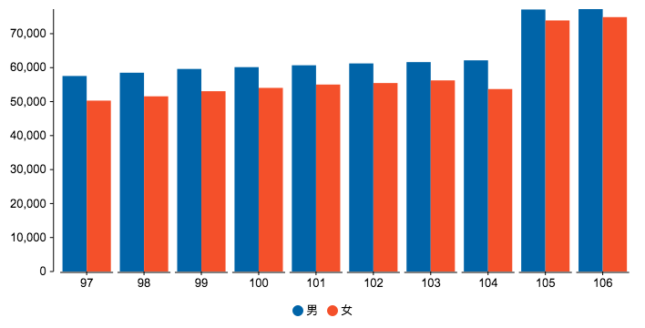

思覺失調症（Schizophrenia）是一種精神科的疾病，以前被稱為精神分裂症，但這個舊稱其實造成許多誤解。思覺失調症的個案通常會伴有慢性、反覆的精神症狀，主要和思考和知覺的失調有關。思覺失調症和憂鬱症、恐慌症、躁鬱症或者是失眠一樣，都是精神科醫師常處理的疾病與症狀，但思覺失調症這個名字聽起來很多人會覺得陌生，甚至因為陌生而產生恐懼。但這個疾病並不少見，在人口中大約有 1% 的人有思覺失調症，也就是說，光是在台灣可能就有超過 10 萬名思覺失調症個案。只是因為長期對精神疾病的漠視與不關心，這些朋友往往生活在社會相對陰暗的角落。 思覺失調症在早年其實被稱為「精神分裂症」，這樣聽起來嚇人的名稱，更是讓許多病友與家屬因為社會的不解與標籤化，而更難以得到支持與幫助。 MedPartner 團隊醫師們希望透過這篇文章，除了完整說明思覺失調症的病因、症狀與治療方式以外，也希望大家能在了解、同理的基礎下，讓整個社會與思覺失調症的病友以及家屬一起努力，共同面對這個疾病。 因為世界上最可怕的，也許不是疾病本身，而是對疾病的誤解，與錯誤的標籤。只有正確的認知，才能幫助自己，也幫助身邊需要的人。
資料來源：社團法人中華民國康復之友聯盟
精神疾病的汙名化對於病人、家屬、與社會皆是一個沉重的存在，思覺失調症病患存有慢性和退化的疾病特徵，儘管規則的接受藥物治療，仍易存有部份殘餘症狀，不僅造成社會大眾對於精神疾病的歧視和汙名化現象，也嚴重影響病患的心理、婚姻、人際、家庭和職業等關係，透過《房思琪的初戀樂園》的林奕含事件了解精神疾病背後之公眾汙名、自我汙名以及社會距離，和《我們與惡的距離》中的角色應思聰，瞭解精神疾病去汙名化。 (https://www.medpartner.club/schizophrenia-introduction/)
思覺失調症（Schizophrenia）在 2014 年以前，在台灣被稱為「精神分裂症」，但「精神分裂」這個詞，光是用聽的，就夠讓病友以及家屬嚇得魂飛魄散了，而且也容易讓社會對這個疾病產生錯誤的標籤。因此在 2014 年時，台灣精神醫學會與中華民國康復之友聯盟共同推動，將精神分裂症這個疾病，正名為思覺失調症。 大家可別覺得只是改個名，有什麼意義？其實意義很重大喔！在當年，許多民眾因為「精神分裂」這四個字受到的疾病污名，因此不敢告訴別人自己的精神狀況、拒絕求助、不敢就醫、不願意繼續治療或復健，這造成了嚴重的惡性循環，讓個案距離康復的路越來越遠。 改成「思覺失調症」，這個名字其實更接近了這個疾病的本質，也就是「思考能力」與「知覺功能」的「失調」，而「失調」二字，其實代表疾病是有「恢復的可能性」，讓人不會感到絕望，就像被診斷「賀爾蒙失調」一樣，多數人不會覺得是絕症。而且在日本的研究中，也發現將精神疾病正名後，個案更有意願回診、完成治療。
思覺失調症的明確病因還不清楚，但比較明確知道的是，這個疾病在全球的發生率大概在 1% 左右，通常在青少年時期到 20 幾歲的這段時間發病，在 12 歲以前或 45 歲以後發病的人較少，另外男性和女性的發病率差不多，不過女性發病的時間，可能比男性晚。
思覺失調症的可能病因很多，但實際病因可能是多個因素共同造成的結果，包含生理、心理以及社會的多重原因，目前無法明確判定：

如果你是思覺失調症的個案，希望你可以透過這篇文章，更加了解自己的疾病與症狀。得到這個疾病並不是你的錯誤，請相信台灣的醫療人員以及社工人員，我們會盡力協助你，和你一起面對所有問題。 如果你是思覺失調症的個案家屬，我們期待你能夠在了解這個疾病後，給予家人最大的支持。並且和醫療人員與社工們共同協助他，因為我們有相同的目標，就是讓他能順利重返家庭、社會，甚至是工作。 我們最希望的，是社會上所有民眾，能夠對思覺失調症有更進一步的理解。當台灣有超過六位數的同胞，受到這個疾病的影響時，我們需要的是更多的同理、更多的支持，而不是更多的誤解、汙名與標籤化。 現代社會的高壓、冷漠、疏離，其實造成了許多身體與心理的疾病。放下自己的成見、用更寬廣的心來看待這個世界，相信我們，你會是讓這個世界更美好的一份力量，而這份力量，會在某一天幫助了某個你不認識的人，或者是你的親友，甚至是你自己。